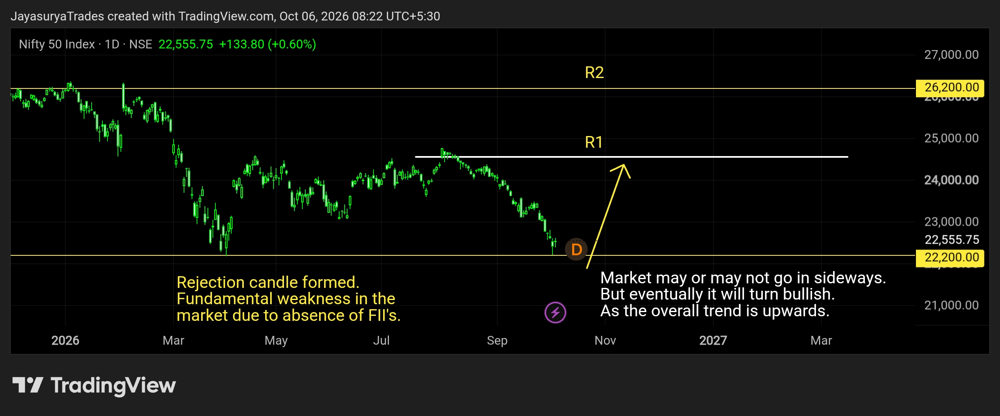

For this Tuesday Market Focus, I am looking at NIFTY 50 and the current market structure around the 22,200 support zone.
The market has reached an area that I consider a key opportunity zone around 22,200. A rejection candle has also appeared very close to this support, keeping the possibility of a shift toward an upside move in focus.
If this support holds, the focus remains on bullish structures and upside confirmation.

22,200 — The Key Support Zone
The most important level in this analysis is 22,200. The market has produced a rejection candle very near this support, which is an important reaction to watch.
From my market-structure perspective, if 22,200 continues to hold, there is potential for the market to move upward. The broader trend is still being viewed as upward, although the current market also has fundamental weakness associated with the absence of strong FII participation.
Upside Levels
If the market moves upward from the 22,200 zone, the next immediate resistance I am watching is 24,500.
If the market breaks above 24,500 with confirmation, the next major level I am watching is 26,200.
24,500 → Resistance 1
26,200 → Resistance 2
Sideways Range Is Also Possible
The market may not immediately move upward. A sideways range could form around the current area.
If a range develops, I would rather wait for the market to show an upside breakout structure instead of forcing a trade inside the range.
FII & DII Participation
One of the current weaknesses I am watching is the absence of strong FII participation. At the same time, DII participation is supporting the market from the downside area in my view.
If the fundamental condition changes and FII participation returns, the bullish move could potentially develop with stronger momentum. The timing and strength of that move would still require confirmation from price structure.
What I Am Watching Now
For Traders
For lower-timeframe traders, the focus is on buy setups. If the market forms a sideways range, I would wait for an upside breakout structure before considering the bullish move.
For Investors
From a technical perspective, the 22,200 area is an important zone to watch for investors because of the support reaction and the broader upward structure. The bullish scenario remains conditional on support holding and the market confirming the move.
The Two Scenarios I Am Watching
Bullish Scenario
If 22,200 holds and the market confirms an upside structure, the first major resistance is 24,500. A confirmed break above 24,500 could open the path toward 26,200.
Sideways Scenario
If the market remains range-bound around the current area, I would wait for the range to develop and then look for an upside breakout rather than taking trades in the middle of the range.
Key Takeaways
- 22,200 is the key support zone I am watching.
- A rejection candle has appeared very close to this support.
- The broader structure is being viewed with a bullish possibility while 22,200 holds.
- A sideways range is also possible before the next directional move.
- If the market moves upward, 24,500 is Resistance 1.
- A confirmed break above 24,500 could bring 26,200 into focus as Resistance 2.
- FII participation is an important fundamental factor I am watching.
- For lower-timeframe traders, the focus remains on buy setups and upside breakout structures.
- Confirmation remains more important than prediction.
The objective is not to predict every movement. It is to watch the key level, understand the structure, and wait for confirmation before acting.
Watch the 22,200 zone.
Wait for the structure.
Let the market confirm the move.
One day. One market. One focused analysis.
Levels. Structure. Scenarios. Confirmation.
No hype. Just how the market behaves.
Watch. Wait. Confirm.
Risk Disclaimer
This analysis is provided for educational and informational purposes only and should not be considered financial advice or a recommendation to buy or sell any financial instrument.
Trading involves substantial risk. Always conduct your own research and follow your own trading plan and risk-management rules.